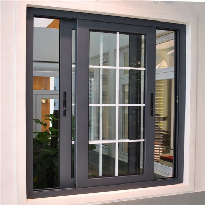
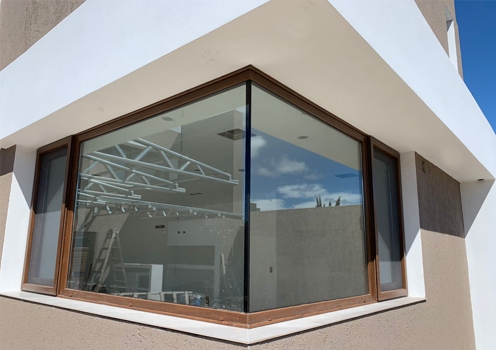
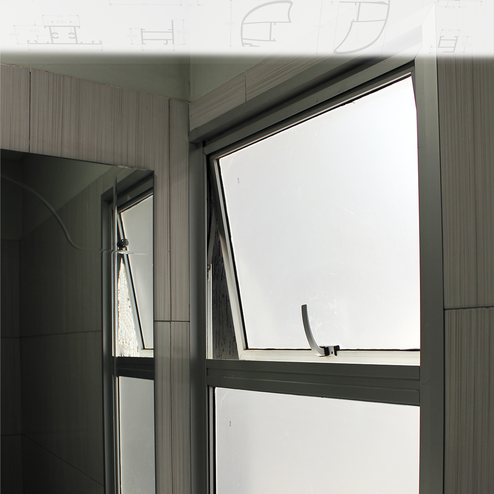

¡En AlumTech te ofrecemos los mejores productos de aberturas de aluminio!
Sistema ventana corrediza

Las ventanas corredizas tienen algunas características a elegir para el comprador. En las líneas Módena
y A30New, tienen la opción de llevar un Doble Vidrio Hermético (DVH) que, como lo dice el nombre, ofrece
un ambiente más hermético en donde la quieran instalar, es una ventana tipo exterior.
Sistema de Puerta

Te ofrecemos todo para ambientar y dar estética a tu hogar, con este sistema de puerta a rebatir, que te ofrecemos desde una calidad económica hasta una calidad alta, las puertas de Aluminio son fáciles de manejar y muy flexibles, con las opciones de complementar el Vidrio DVH, Vidrio Simple, o armarlas con un perfil para revestir.
Sistema de Paño Fijo

El sistema de paño fijo, consiste en una ventana exterior que brinda estética y comodidad, a elección de complementar el Vidrio DVH o Vidrio Simple.
Sistema de Ventana Proyectante

Este sistema de Ventana Proyectante, le da al comprador, un toque estético muy favorable al ambiente donde la quiera instalar, además de ser muy flexible y fácil de usar e instalar. También se le puede poner el Vidrio DVH